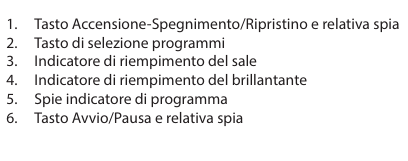
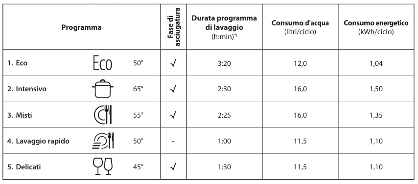
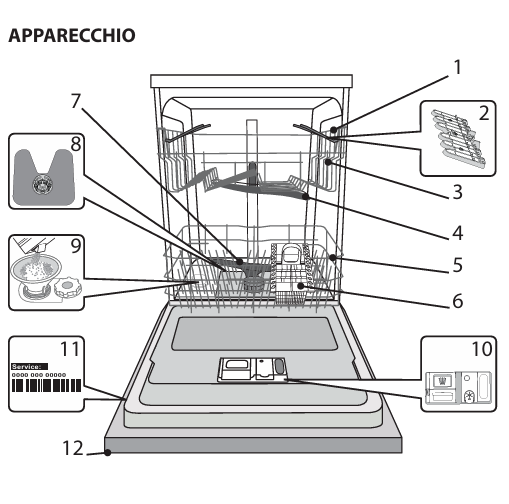
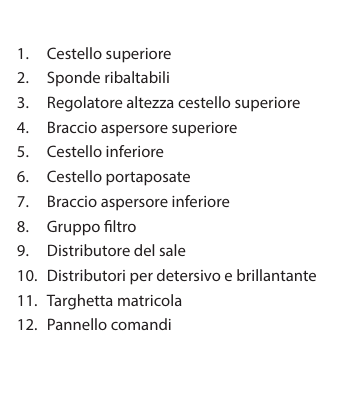
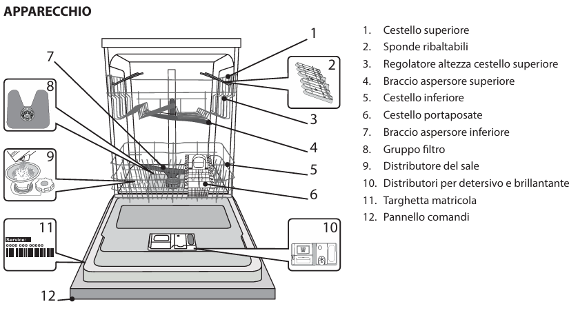

Istruzioni lavastoviglie
Descrizione del prodotto
- Cestello superiore: per piatti poco resistenti e stoviglie delicate come vetri, tazze, piattini e insalatiere dai bordi bassi.
- Cestello inferiore: per pentole, coperchi, piatti, insalatiere e stoviglie di grandi dimensioni.
- Cestello portaposate: per posate e piccoli oggetti.
- Distributori: per detersivo e brillantante.



Uso quotidiano
- Accensione: aprire lo sportello e premere il tasto accensione/spegnimento.
- Caricamento dei cestelli: caricare i cestelli con le stoviglie come descritto sopra.
- Riempimento del distributore del Detersivo: aggiungere il detersivo nel distributore.
- Selezione del programma: selezionare il programma desiderato premendo il tasto P.
- Avvio: premere il tasto avvio/pausa e chiudere la porta entro 4 secondi. All'avvio del programma viene emesso un segnale acustico.
Programmi
- Eco: per stoviglie mediamente sporche; il programma più efficiente in termini di consumo combinato di acqua ed energia.
- Intensivo: per stoviglie e pentole molto sporche (non usare per pezzi delicati).
- Misti: per piatti con sporco normale e residui secchi di cibo.
- Lavaggio rapido: per un carico ridotto di stoviglie normalmente sporche, permette di ottenere un risultato di lavaggio ottimale in un tempo più breve.
- Delicati: per oggetti delicati, più sensibili alle temperature elevate, ad esempio bicchieri e tazze.

Fine del ciclo di lavaggio
- Indicazione di fine: la conclusione del ciclo è indicata da un segnale acustico e dal lampeggio dell'indicatore del programma selezionato.
- Spengimento: aprire la porta e spegnere l'apparecchio premendo il tasto accensione/spegnimento.
- Scarico: attendere alcuni minuti prima di rimuovere le stoviglie per evitare bruciature, quindi scaricare prima il cestello inferiore e poi quello superiore.
Consigli utili
- Risparmio energetico: avviare la lavastoviglie solo a pieno carico per ottimizzare il consumo di acqua ed energia.
- Aggiunta di stoviglie: se necessario, aggiungere stoviglie durante il ciclo aprendo la porta, premendo il tasto avvio/pausa e richiudendo la porta entro 4 secondi.
- Modifica del programma: se si desidera cambiare il programma, spegnere l'apparecchio e riaccenderlo selezionando il nuovo ciclo.
Risoluzione dei problemi
- Indicatore del sale acceso: il serbatoio del sale è vuoto. Riempirlo con sale specifico per lavastoviglie.
- Indicatore del brillantante acceso: la vaschetta del brillantante è vuota. Riempirla con brillantante specifico per lavastoviglie.
- La lavastoviglie non si avvia: controllare che l'apparecchio sia correttamente collegato alla corrente elettrica e che la porta sia ben chiusa.
- Rumorosità eccessiva: sistemare correttamente le stoviglie nei cestelli e verificare che non ostacolino la rotazione dei bracci aspersori.
- Piatti non puliti: verificare la disposizione delle stoviglie, il livello di detersivo e che i filtri non siano ostruiti.
-

 